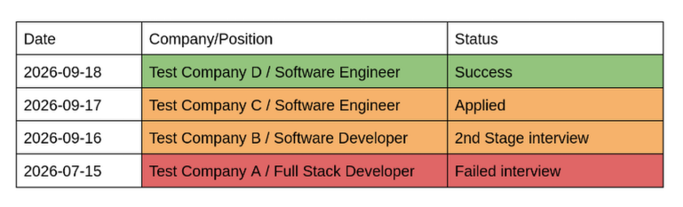
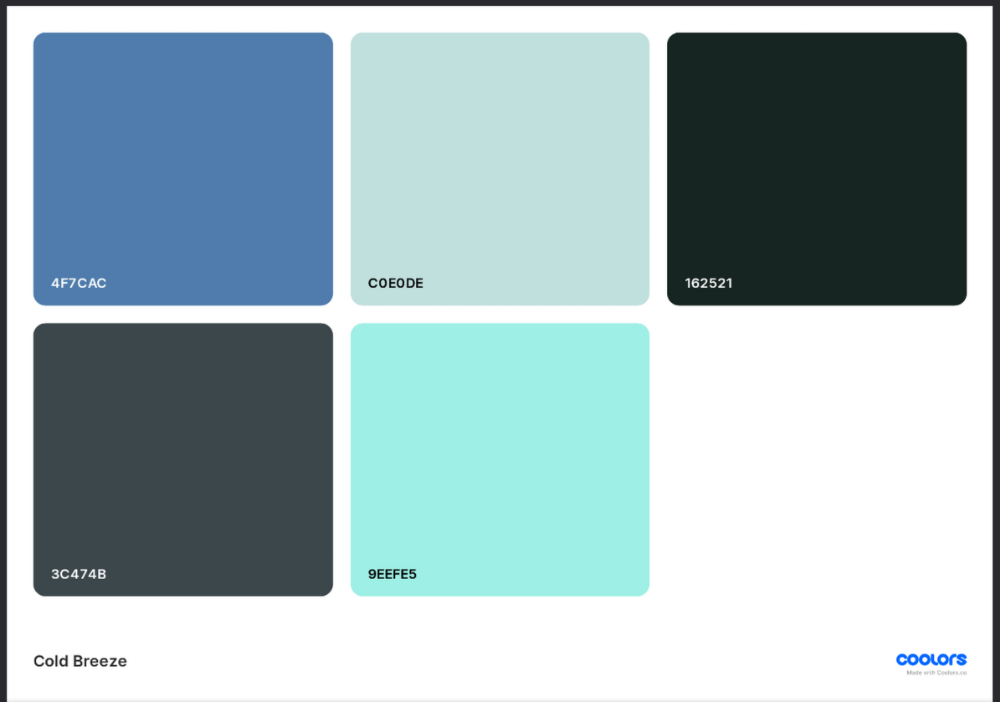
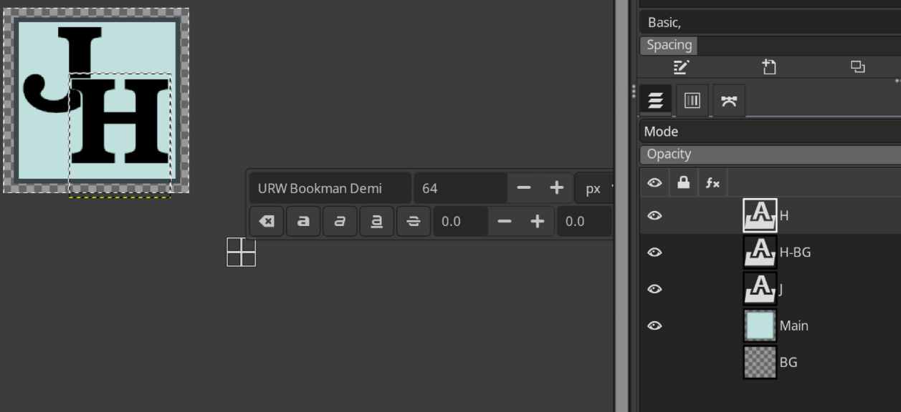
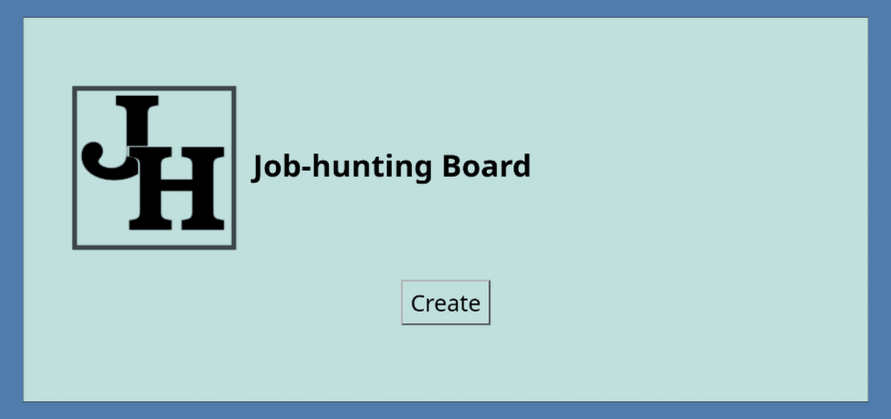
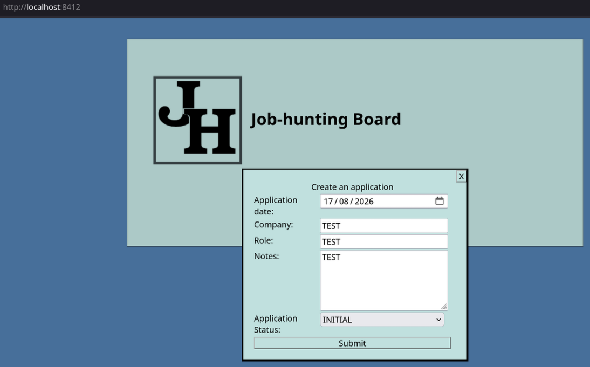
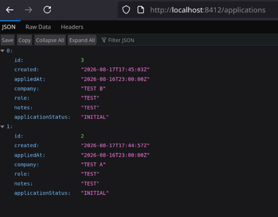
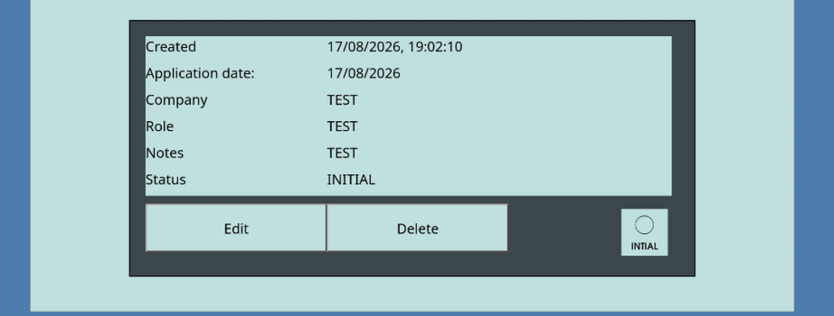
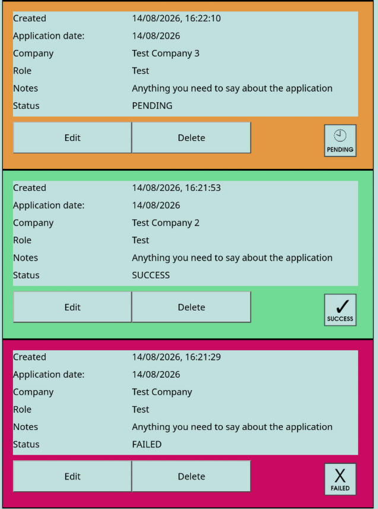

Job Hunting Site
The Process
Recently I found myself looking back on how I tracked and managed my job applications in the past.
Previously a simple Google Doc containing a table and some coloring was enough:

This works, but has a few limitations (limited space for notes, difficult to add new fields if needed, not really easy to understand at first glance)
Seeing this as a good opportunity to create a Java/Kotlin (My most familiar languages) powered webapp for myself, I settled on combining a few of my technological comfort zones to approach this:
- Simple static HTML with dynamic ES6 style JS - I already had a good basis to start from with this personal site in terms of bootstrapping and structure
- Kotlin backend - I've worked a lot with Kotlin recently, it's a very nice extension to the JVM world and should be super easy to set up a CRUD backend in
With this as the base I started to rework my personal site into a style that felt appropriate. To do this I:
- Generated a nice color palette using coolors.co

- Created a replacement icon / favicon:

- Applied the styling and tidied up (Removed the top-nav and any unneeded files from the code) from the base site of darrenjoseph.uk, leaving me with a blank slate:

I then started looking into how I would power the API and application storage, I settled on Ktor for the API layer, and Exposed for the DB layer (as these are both created by JetBrains, I can be quite sure these are mature and well made)
For the DB itself I decided on SQLite as it's a very simple DB that can save down to a single file for local storage (As I never intend for this site to run anywhere but locally, and to potentially be portable without a lot of setup required)
I then started both creating the backend models for a Job Application and the API paths (just POST and GET initially), and a simple "Create" button and popup dialog to submit a form to the backend, so I can quickly check the end-to-end submission and retrieval through the whole stack
Then in tandem I wired up the API to the SQLite DB through JobApplicationRepository and created enough of the application submission form within the dialog so be able to POST to the server:

I then submitted some applications and checked that if I hit http://localhost:8412/applications I would be able to retrieve submitted applications (via GET):

After comfortably being able to create and retrieve applications (create through the form hitting the POST API, and retrieval through a plain GET), I decided that the nginx server I'd normally use to serve the site was adding an unnecessary layer on top of Ktor and slowing down my local development by needing to "deploy" the site. To make this cleaner I implemented routing within Ktor to serve the entire site instead of just it's API
I now had a full webapp served by Ktor (the HTML, CSS, JS, images, and API) with simple JS on the frontend providing all the dynamic behavior required. Due to this all in one nature I realised I could make this portable, so added the ability to build the entire application as a "Fat" JAR so it could be run independently via a USB stick or folder
From here I created "Cards" to represent the existing applications retrieved via the API GET in a nice list with all the controls needed baked in. Due to the pain and limitations of tables in HTML I decided upon using CSS Grid Layout for them, like so:
.job-application-card {
width: 80%;
padding: 5px;
margin-left: auto;
margin-right: auto;
border: 2px solid black;
}
.job-application-card-content {
width: 98%;
display: grid;
grid-template-areas:
"card-created-label card-created-value card-created-value"
"card-applied-at-label card-applied-at-value card-applied-at-value"
"card-position-label card-position-value card-position-value"
"card-role-label card-role-value card-role-value"
"card-notes-label card-notes-value card-notes-value"
"card-notes-label card-notes-value card-notes-value"
"card-notes-label card-notes-value card-notes-value"
"card-notes-label card-notes-value card-notes-value"
"card-notes-label card-notes-value card-notes-value"
"card-notes-label card-notes-value card-notes-value"
"card-status-label card-status-value card-status-value"
"card-edit-button card-delete-button card-status-icon";
grid-template-columns: 1fr 1fr 1fr;
grid-template-rows: repeat(6, minmax(25%, auto));
margin-left: auto;
margin-right: auto;
justify-content: start;
gap: 0;
padding: 2%;
}
As you can see here I use grid-template-areas to define a left-hand column for every input label required, and 2 right hand columns for input values as well as to give space for the controls/icon at the bottom of the card
I adjusted the initial card design over time to arrive at the current style, and added:
- Status icons (bottom-right)
- Edit and Delete buttons (while also adding the backend and frontend code support for this)
- Status based background coloring
- a larger 6 row space for notes (and a textarea in the form to allow longer inputs)
This then left me with a serviceable card design that expands upon my original Google Docs table approach in a consistent manner:

Here'ss an example of some of the other statuses to show the card variation:
